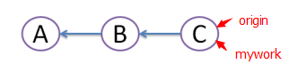
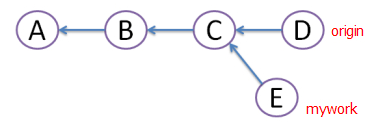
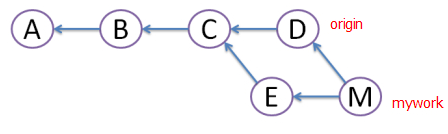
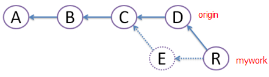

简单对比git pull和git pull --rebase的使用
使用下面的关系区别这两个操作：
- git pull = git fetch + git merge
- git pull –rebase = git fetch + git rebase
现在来看看git merge和git rebase的区别。
假设有3次提交A, B, C。

在远程分支origin的基础上创建一个名为mywork的分支并提交了，同时有其他人在origin上做了一些修改并提交了。

其实这个时候E不应该提交，因为提交后会发生冲突。
如何解决这些冲突呢？有以下两种方法：
git merge
用git pull命令把origin分支上的修改pull下来与本地提交合并（merge）成版本M，但这样会形成图中的菱形，让人很困惑。

git rebase
创建一个新的提交R，R的文件内容和上面M的一样，但我们将E提交废除，当它不存在（图中用虚线表示）。
rebase的好处是避免了菱形的产生，保持提交曲线为直线，让大家易于理解。

- 在
rebase的过程中，有时也会有conflict，这时Git会停止rebase并让用户去解决冲突。 - 解决完冲突后，用
git add命令去更新这些内容，然后不用执行git-commit，直接执行git rebase --continue，这样git会继续apply余下的补丁。 - 在任何时候，都可以用
git rebase --abort参数来终止rebase的行动，并且mywork分支会回到rebase开始前的状态。